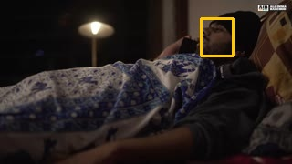
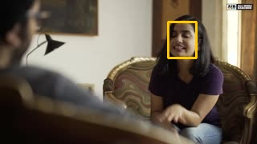
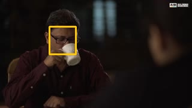
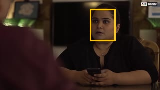
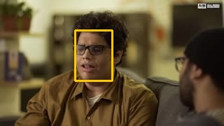
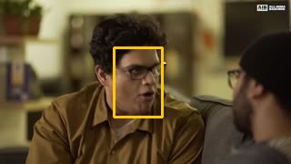
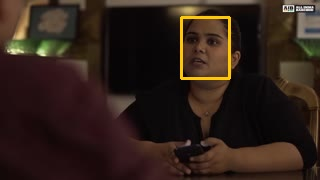
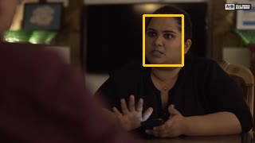
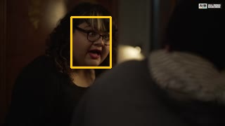
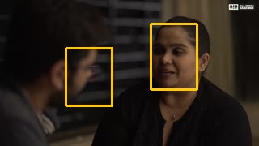
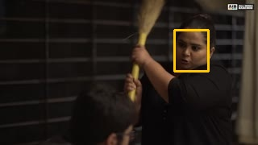
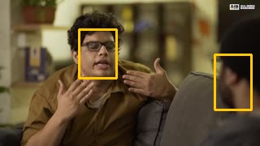
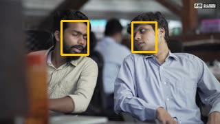


pair mode, 307.6 s, analysis every 50 ms, faces at 8.0 fps.
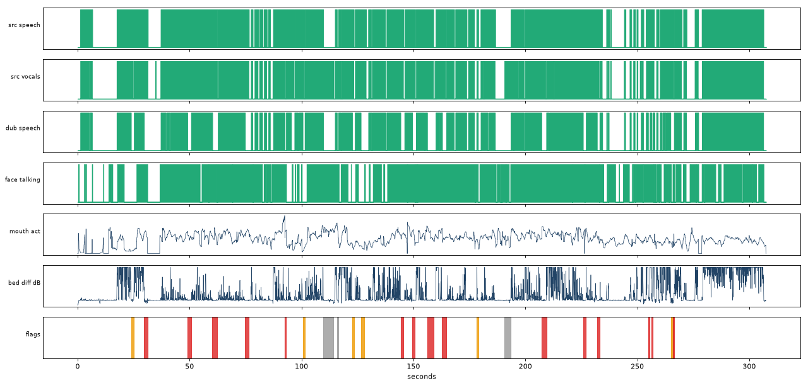
| speech_seconds_source | 238.5 |
| speech_seconds_dub | 202.6 |
| source_speech_covered_by_dub_pct | 84.4 |
| dub_speech_inside_source_speech_pct | 99.4 |
| face_on_screen_pct | 94.7 |
| mouth_activity_vs_source_speech_auc | 0.623 |
| mouth_threshold_balanced_acc | 0.61 |
| visual_flag_confidence | "medium" |
| mouth_vs_source_speech_lag_ms | 0 |
| mouth_vs_source_speech_corr | 0.448 |
| mouth_vs_dub_speech_lag_ms | 0 |
| mouth_vs_dub_speech_corr | 0.29 |
| bed_level_diff_db_median | -1.87 |
| bed_ducked_seconds | 0.0 |
| dialogue_vs_source_voice_db_median | 0.0 |
| line_level_diff_db_mean_abs | 0.57 |
| lines_level_diff_over_6db | 1 |
| clipped_samples | 0 |
| sample_peak_dbfs | -0.2 |
| bed_sync_per_30s_lag_ms | [[0, 0, 0.91], [30, 0, 0.99], [60, 0, 0.92], [90, 0, 0.84], [120, 0, 0.82], [150, 0, 0.83], [180, 0, 0.88], [210, 0, 0.82], [240, 0, 0.82], [270, 0, 0.62]] |
| loudness_source | {"integrated_lufs": -15.9, "true_peak_dbtp": 0.9, "lra_lu": 16.5} |
| loudness_dub | {"integrated_lufs": -19.0, "true_peak_dbtp": -0.2, "lra_lu": 15.5} |
| flags | {"level_jump": 1, "speech_not_dubbed": 5, "talking_face_dub_silent": 15, "vocals_dropped": 3} |
| flags_by_severity | {"high": 15, "medium": 6, "low": 3} |
| flagged_seconds_high | 21.2 |
| time (s) | kind | severity | line | why | detail | frame |
|---|---|---|---|---|---|---|
| 23.85-25.20 | speech_not_dubbed | medium | L002b | the original has speech here but the dub track is silent | {"variant": "rw", "en": "No man don't book mine, puking since morning, high fever.", "tempo": 1.0, "gain": 0.93} |  |
| 29.65-31.20 | talking_face_dub_silent | high | L003 | a face on screen is moving its mouth while the original has speech, but the dub is silent | {"variant": "rw", "en": "Typhoid and stuff? Are you crazy? There's no such thing, bro, just get out and have fun.", "tempo": 1.0, "gain": 0.78} | |
| 49.05-50.75 | talking_face_dub_silent | high | L005 | a face on screen is moving its mouth while the original has speech, but the dub is silent | {"variant": "en_short", "en": "The more you think you have typhoid, the more it grows.", "tempo": 1.0, "gain": 0.99} |  |
| 60.20-62.20 | talking_face_dub_silent | high | L006 | a face on screen is moving its mouth while the original has speech, but the dub is silent | {"variant": "rw", "en": "Bacteria die on their own in two months. Lost promotion? No? Then typhoid? Day before yesterday at Sahil's party you were laughing, dancing, joking. What happened suddenly?", "tempo": 1.0, "gain": 1.42} | |
| 74.80-76.55 | talking_face_dub_silent | high | L007 | a face on screen is moving its mouth while the original has speech, but the dub is silent | {"variant": "rw", "en": "This fever burning could be one thing. If you're smiling and you have typhoid, how can you have both? Are you sure you didn't get typhoid because Garima broke up with you? Go get on Tinder. Your typhoid, vomiting, diarrhea will all go away.", "tempo": 1.0, "gain": 0.99} | |
| 92.55-93.15 | talking_face_dub_silent | high | L013 | a face on screen is moving its mouth while the original has speech, but the dub is silent | {"variant": "en", "en": "Jogging every morning gives you perspective and typhoid goes away. Perspective up, typhoid go go.", "tempo": 1.0, "gain": 0.94} |  |
| 100.55-101.50 | speech_not_dubbed | medium | L015 | the original has speech here but the dub track is silent | {"variant": "en", "en": "Nikhil has some fever thing. You haven't told anyone he has a fever, right?", "tempo": 1.0, "gain": 0.54} |  |
| 109.70-114.25 | vocals_dropped | low | the original has voice sound outside any dubbing line (laugh, breath, shout, crowd) that is missing in the dub | {} |  | |
| 115.85-116.50 | vocals_dropped | low | the original has voice sound outside any dubbing line (laugh, breath, shout, crowd) that is missing in the dub | {} |  | |
| 122.65-123.40 | speech_not_dubbed | medium | L019 | the original has speech here but the dub track is silent | {"variant": "rw", "en": "A smile means no typhoid. I know it. Nikhil's friend said that too.", "tempo": 1.0, "gain": 1.69} |  |
| 126.50-128.10 | speech_not_dubbed | medium | L020 | the original has speech here but the dub track is silent | {"variant": "rw", "en": "There are separate doctors for these fever things.", "tempo": 0.93, "gain": 0.88} |  |
| 144.25-145.50 | talking_face_dub_silent | high | L023 | a face on screen is moving its mouth while the original has speech, but the dub is silent | {"variant": "rw", "en": "People'll say whole family has fever, bro. They say typhoid, these doctors run a scam just to squeeze money.", "tempo": 1.0, "gain": 2.01} | |
| 149.50-150.60 | talking_face_dub_silent | high | L024 | a face on screen is moving its mouth while the original has speech, but the dub is silent | {"variant": "rw", "en": "Typhoid, whatever, they just make up names. Come on, you're educated, right?", "tempo": 1.0, "gain": 1.23} | |
| 156.15-158.95 | talking_face_dub_silent | high | L025 | a face on screen is moving its mouth while the original has speech, but the dub is silent | {"variant": "en_short", "en": "Don't fall for this. You need motivation, not medication. Determination.", "tempo": 1.0, "gain": 1.42} | |
| 162.85-164.75 | talking_face_dub_silent | high | L026 | a face on screen is moving its mouth while the original has speech, but the dub is silent | {"variant": "en_short", "en": "You know Nisha's marriage broke up? Do you know Payal?", "tempo": 1.0, "gain": 1.24} |  |
| 178.21-178.97 | level_jump | medium | L030 | dub voice is +10.2 dB vs the original voice on this line | {"variant": "rw", "en": "Put it on.", "tempo": 1.0, "gain": 0.5} |  |
| 190.70-193.50 | vocals_dropped | low | the original has voice sound outside any dubbing line (laugh, breath, shout, crowd) that is missing in the dub | {} |  | |
| 207.20-209.40 | talking_face_dub_silent | high | L035 | a face on screen is moving its mouth while the original has speech, but the dub is silent | {"variant": "en", "en": "It'll be fine. Maybe you need to change your job, your house, your city, your state, your continent. Or just change yourself.", "tempo": 1.0, "gain": 1.39} | |
| 225.75-227.00 | talking_face_dub_silent | high | L039 | a face on screen is moving its mouth while the original has speech, but the dub is silent | {"variant": "rw", "en": "Over hyperventilating, just over it. Don't overthink, you're on fire thinking you're not thinking.", "tempo": 1.0, "gain": 0.99} |  |
| 232.00-233.20 | talking_face_dub_silent | high | L040 | a face on screen is moving its mouth while the original has speech, but the dub is silent | {"variant": "rw", "en": "You don't have typhoid, you just need a long vacation. Come to the movies with us.", "tempo": 1.0, "gain": 2.66} | |
| 254.85-255.60 | talking_face_dub_silent | high | L049 | a face on screen is moving its mouth while the original has speech, but the dub is silent | {"variant": "rw", "en": "Don't tell anyone. I know nothing. Why would I say?", "tempo": 1.127, "gain": 0.5} |  |
| 256.40-256.90 | talking_face_dub_silent | high | L049 | a face on screen is moving its mouth while the original has speech, but the dub is silent | {"variant": "rw", "en": "Don't tell anyone. I know nothing. Why would I say?", "tempo": 1.127, "gain": 0.5} | |
| 265.10-266.25 | speech_not_dubbed | medium | L051 | the original has speech here but the dub track is silent | {"variant": "en", "en": "It's typhoid, it's like any other illness. If we keep whispering about it like this...", "tempo": 1.0, "gain": 0.5} | |
| 265.85-266.45 | talking_face_dub_silent | high | L051 | a face on screen is moving its mouth while the original has speech, but the dub is silent | {"variant": "en", "en": "It's typhoid, it's like any other illness. If we keep whispering about it like this...", "tempo": 1.0, "gain": 0.5} | |